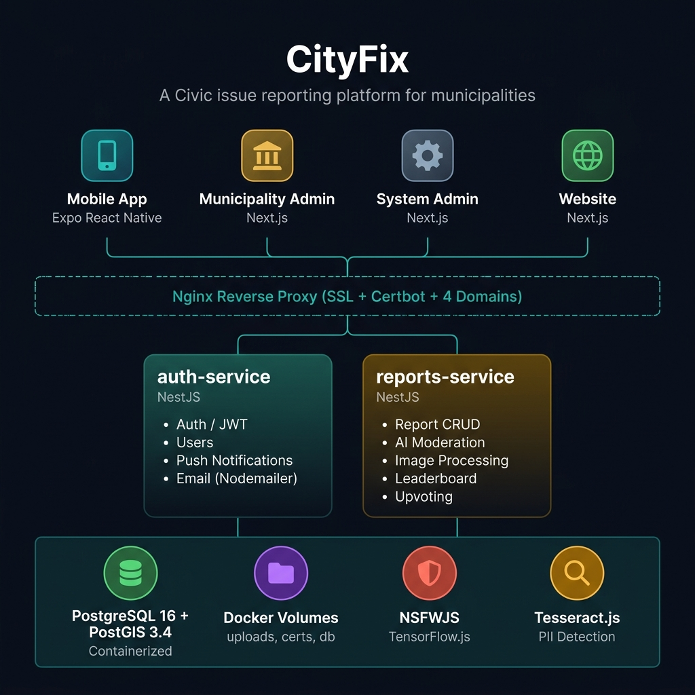
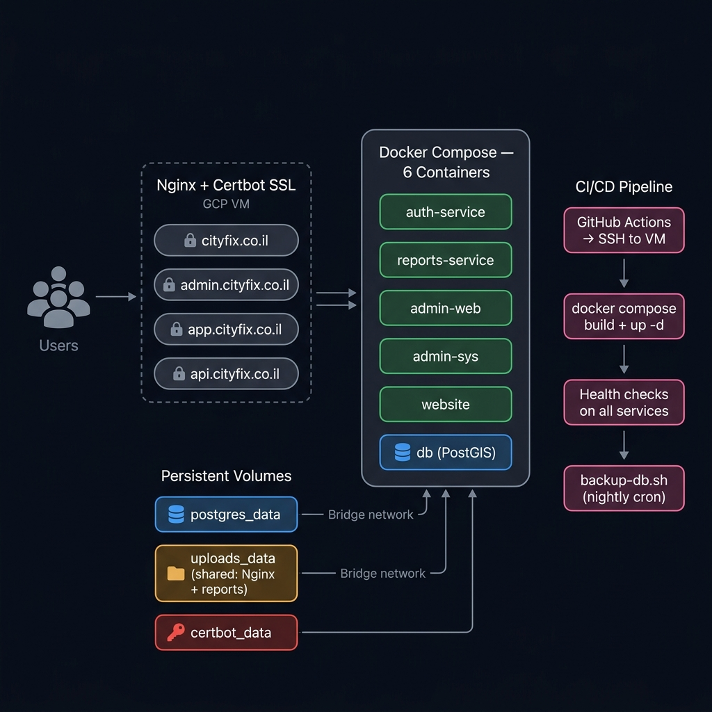

Platform Overview
CityFix is a civic issue reporting platform for municipalities. Citizens report geolocated problems (potholes, broken streetlights, graffiti); city employees triage and resolve issues via dedicated admin portals. The platform features AI-powered content moderation, offline-first mobile reporting, and gamification with leaderboards.
"Report. Track. Fix. - Making cities better, one report at a time."
GPS-tagged photo reports with map pinning
Profanity filter, NSFW detection, PII blurring
Background queue with auto-drain on reconnect
Interactive map for browsing and reporting issues
Leaderboard, milestone confetti & upvoting
Municipality portal + system admin portal
Tech Stack
| Layer | Technology | Details |
|---|---|---|
| Mobile App | React Native + Expo | Expo SDK, React Navigation |
| Municipality Admin | Next.js + React | admin.cityfix.co.il |
| System Admin | Next.js + React | app.cityfix.co.il |
| Marketing Website | Next.js | cityfix.co.il |
| Backend Services | NestJS (TypeScript) × 2 | auth-service, reports-service |
| ORM | Prisma | Multi-schema isolation |
| Database | PostgreSQL 16 + PostGIS 3.4 | postgis/postgis:16-3.4-alpine |
| AI - NSFW | TensorFlow.js + NSFWJS | Image content moderation |
| AI - OCR | Tesseract.js | PII text detection & blurring |
| Text Moderation | leo-profanity | Abusive language filtering |
| Image Processing | Sharp | Resize, WebP conversion, PII blur regions |
| Monitoring | Sentry | Error tracking & performance |
| Language | TypeScript (100%) | Full-stack typed |
Architecture
Monorepo Structure
CityFix/
├── apps/
│ ├── auth-service/ # NestJS - Auth, JWT, Users, Email
│ ├── reports-service/ # NestJS - Reports CRUD, AI Moderation
│ ├── admin-web/ # Next.js - Municipality Portal
│ ├── admin-sys/ # Next.js - System Admin Portal
│ ├── website/ # Next.js - Public Marketing Site
│ └── mobile/ # Expo React Native - Field Reporting
├── deploy/
│ ├── docker-compose.prod.yml
│ ├── nginx.prod.conf
│ ├── enable-tls.sh
│ └── backup-db.sh
└── .github/workflows/ # CI/CD pipeline definitionsSystem Architecture
Expo React Native
admin.cityfix.co.il
app.cityfix.co.il
cityfix.co.il
PostGIS 3.4 (containerized)
uploads, certs, db
Architecture Diagrams


Service Breakdown
🔐 auth-service
User identity, JWT authentication, email-based auth (Nodemailer), user accounts and profile management.
| Module | Purpose |
|---|---|
AuthModule |
JWT issuing, email/password auth, token refresh & blacklisting |
UsersModule |
User CRUD, role management (citizen, employee, admin) |
PushModule |
Expo Push Token registration & notification dispatch |
📋 reports-service
Core business logic - civic issue reports CRUD, AI moderation pipeline, image processing, upvoting, and status management.
| Module | Purpose |
|---|---|
ReportsModule |
Report CRUD, status transitions (OPEN → IN_PROGRESS → RESOLVED/REJECTED), upvoting |
ModerationModule |
NSFWJS + TensorFlow image scanning, leo-profanity text filtering |
PiiBlurModule |
Tesseract.js OCR → Sharp bounding-box blur on detected PII text |
UploadModule |
Image optimization (Sharp resize + WebP conversion), local volume storage |
LeaderboardModule |
Gamification queries - top reporters, milestone tracking |
AI Moderation Pipeline
5-Stage Report Processing
Every incoming civic report passes through a multi-stage AI pipeline before being committed to the database.
leo-profanity scans title and description for abusive language.
Rejects immediately if detected.
Sharp resizes to 1200px max width and converts to WebP. Original
file is unlinked.
Tesseract.js OCR scans the image for text (license plates, ID
cards). Detected regions are blurred via Sharp.
NSFWJS + TensorFlow scans the blurred image. Rejects and deletes
if pornographic or graphic content detected.
Verified, blurred, optimized WebP is saved to /uploads volume and
the DB entry is created.
Database Design
Schema Architecture
Both services share a single PostgreSQL 16 + PostGIS 3.4 containerized instance, separated by schemas managed via Prisma:
| Prisma Config | DB Schema | Service |
|---|---|---|
auth-service/prisma/schema.prisma |
auth |
auth-service |
reports-service/prisma/schema.prisma |
reports |
reports-service |
Core Entities
uuid idPKstring emailUKstring nameenum roleCITIZEN | EMPLOYEE | ADMINstring passwordhashed (bcrypt)
uuid idPKstring titlestring descriptionenum statusOPEN | IN_PROGRESS | RESOLVED | REJECTEDfloat locationLatfloat locationLngstring imageUrlint upvotes
- Aggregated from Report counts
- Top reporters ranking
- Milestone confetti triggers
- Date-range filtering
uuid idPKstring endpointUKuuid userIdFK- Expo Push Token storage
Infrastructure
GCP VM Deployment
Shared: Nginx + reports-service
Nginx Routing
| Domain | Route | Backend Target |
|---|---|---|
cityfix.co.il |
/** |
website:3000 |
admin.cityfix.co.il |
/** |
admin-web:3000 |
app.cityfix.co.il |
/** |
admin-sys:3002 |
api.cityfix.co.il |
/api/auth/** |
auth-service:3000 |
api.cityfix.co.il |
/api/reports/** |
reports-service:3001 |
api.cityfix.co.il |
/uploads/** |
Nginx static serving (direct volume mount) |
uploads_data volume - never routed through Node.js for performance.
DevOps & CI/CD
Pipeline Overview
- Backend: Lint & Test (auth, reports)
- Web: Lint & Build (admin-web, admin-sys, website)
- Mobile: Jest Tests
- Docker Build Smoke Test
- GitHub Actions → SSH into GCP VM
git pulllatest changesdocker compose -f docker-compose.prod.yml builddocker compose up -d- Health checks on all services
- EAS Build (iOS / Android)
- TestFlight / Play Console submit
Database Backups
backup-db.sh - PostGIS dump with timestamped filenames,
stored on the VM's persistent disk.
Observability & Quality
System Admin Portal — Platform Observability
A dedicated Next.js System Admin portal (app.cityfix.co.il)
provides platform-wide visibility. Separate from the municipality admin, this portal focuses on engineering
operations:
Auto-refreshing (30s) liveness checks across 5 Docker services (Admin Sys, Auth Service, Reports Service, Admin Web, Website). Per-service response time with color-coded latency bands: green (<200ms), orange (200ms–1s), red (>1s). Aggregate operational status banner.
GitHub Actions integration showing CI success rate, deploys this week, latest CI and deploy run numbers. Two pipeline views: CI Pipeline (lint, test, build) and Production Deploy (SSH → Docker Compose). Each run shows pass/fail status, commit hash, author, and age. Direct link to GitHub Actions.
Integrated Sentry view tracking 4 projects: cityfix-auth-service,
cityfix-reports-service, cityfix-admin, and cityfix-mobile.
Shows unresolved and new error counts per project. Overview widget displays total Sentry errors (24h)
alongside CI status and report counts.
Taxonomy management for report categories across all municipalities. Moderation pipeline configuration and monitoring for the AI content filtering stages (profanity, NSFW, PII).
Error Tracking & Uptime
| Tool | Scope | Details |
|---|---|---|
| Sentry | Backend (×2) + Admin + Mobile | @sentry/nestjs on auth-service and reports-service. @sentry/react-native
on mobile. Admin dashboard Sentry tracking. Source maps uploaded in CI. Error counts surfaced in
System Admin overview. |
| UptimeRobot | All 4 public domains | 60-second interval HTTP health checks on cityfix.co.il,
admin.cityfix.co.il, app.cityfix.co.il, and
api.cityfix.co.il. Instant Slack/email notifications on downtime. Public status page.
|
| Docker Health Checks | 6 containers | Docker Compose healthcheck directives on all service containers. Post-deploy CI
validation via SSH health check commands. |
System Admin Overview
The System Overview dashboard aggregates key platform signals into a single pane of glass:
| Signal | Source | Description |
|---|---|---|
| Active Cities | Database | Number of municipalities onboarded |
| Total Reports | Database | Aggregate civic reports across all cities |
| Reports Today | Database | 24h report volume |
| CI Status | GitHub Actions API | Latest CI run pass/fail status |
| Sentry Errors | Sentry API | New unresolved errors in the last 24h |
| Pipeline Summary | GitHub Actions API | Last 3 CI runs with commit messages and status |
| Error Monitoring | Sentry API | Per-project (auth, reports, admin, mobile) error counts |
| Service Health | Health endpoints | 5/5 services operational status with response times |
Key Architectural Decisions
VM over Serverless
Docker Compose on a single GCP VM keeps costs fixed and simplifies inter-container networking (bridge network with internal hostnames).
Nginx as Reverse Proxy
Handles SSL termination (Certbot), domain routing (4 domains), and static file serving from shared volumes - keeping Node.js focused on business logic.
AI Pipeline in Upload Flow
Moderation happens synchronously at upload time - no deferred queue. Bad content never reaches the database.
Shared Upload Volume
uploads_data is mounted to both Nginx and reports-service. Nginx serves images natively;
Node.js never handles image streaming.
Offline-First Mobile
Reports are queued locally and auto-drained on reconnect - critical for field workers in poor-connectivity areas.
Dual Admin Portals
Municipality admin (admin.cityfix.co.il) for per-city management; System admin
(app.cityfix.co.il) for platform-wide operations.
PostGIS Containerized
Database runs as a Docker container (postgis/postgis:16-3.4-alpine) with persistent volume
- easy backup and migration.
4-Language Support
Full i18n (en, he, ar, ru) with RTL support via I18nManager.forceRTL() - serving diverse
municipal populations.